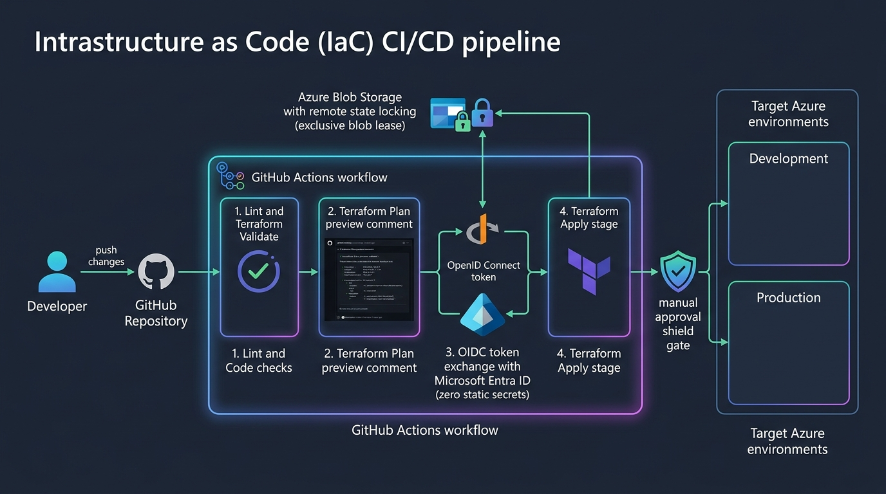

Comprehensive Practice Guide
Azure IaC & CI/CD Pipeline
Complete Beginner-Friendly Terraform, GitHub Actions & Passwordless OIDC Guide with Architecture Diagrams, Portal Clicks & Interview Q&A

Figure 2.1: Automated GitOps Pipeline using GitHub Actions, OIDC Token Federation with Entra ID, Remote State Blob Lease Locking, and Multi-Environment Protection Gates.
🏭 1. The Big Picture & Real-World Analogy
Imagine a modern, automated automobile manufacturing factory:
- The Blueprint (Terraform Code -
.tf files):
Instead of assembling each car manually with tools (clicking in the Azure Portal), engineers draw precise engineering blueprints defining every chassis, engine, and cable. Anyone running this blueprint builds the exact same identical vehicle every single time.
- The Central Inventory Book (Terraform State & Azure Blob Storage):
The factory keeps a digital ledger (
terraform.tfstate) in a secure, encrypted cloud vault (Azure Blob Storage). It records every car built, its serial numbers, and exact configuration so Terraform knows never to rebuild parts that already exist.
- The Robotic Lock (Blob Lease / State Locking):
If two robotic arms attempt to weld the exact same door at the exact same millisecond, the machinery would collide. Azure Blob Lease locks the ledger exclusively for 60 seconds while an operation runs, preventing race conditions and corrupted state.
- The Quality Inspector & Assembly Line (GitHub Actions CI/CD):
When an engineer submits an improvement via a Pull Request (PR):
- Robot Inspector 1 checks code formatting and syntax (
terraform fmt and terraform validate).
- Robot Inspector 2 performs a simulation (
terraform plan): "Here is what will be added (+), modified (~), or deleted (-)."
- When approved and merged into
main, the assembly robot presents a temporary electronic badge (OIDC JWT token) to Azure and applies changes automatically without storing static passwords.
⚙️ 2. Core IaC & CI/CD Concepts Explained (Points-Based)
- Infrastructure as Code (IaC):
Managing cloud infrastructure using version-controlled code files rather than manual interactive tools. Declarative syntax allows you to specify the desired end state, and the engine calculates the required changes.
- Terraform State File (
terraform.tfstate):
A JSON file mapping your Terraform code definitions to real Azure Resource IDs. Never delete or lose this file—without it, Terraform loses track of real-world resources and fails with naming collisions.
- Remote Backend (Azure Blob Storage):
Storing state in an encrypted cloud container rather than locally on your laptop:
- Team Collaboration: All engineers share the exact same source of truth.
- Security: Encrypted at rest (TLS 1.2+ & SSE).
- State Locking: Azure Blob leases block concurrent conflicting applies.
- OpenID Connect (OIDC / Federated Identity):
Traditional CI/CD uses Service Principal Client Secrets (passwords) stored in GitHub Secrets. These secrets expire, require manual rotation, and risk leakages. OIDC provides passwordless authentication: GitHub Actions generates a temporary cryptographic JWT token that Microsoft Entra ID validates on demand for a 1-hour access pass.
- Multi-Environment Segmentation (Dev, Staging, Prod):
Isolating infrastructure tiers using environment-specific
.tfvars files. Reduces Blast Radius so bugs in dev never impact production.
🖱️ 3. Step-by-Step Azure Portal (UI) & GitHub (UI) Setup Guide
- Go to portal.azure.com → Search "Storage accounts" → Click "+ Create".
- Resource Group: Click "Create new" → Name:
rg-tfstate-prod.
- Storage account name:
sttfstatepipeline... (must be alphanumeric, lowercase, unique).
- Region:
East US, Performance: Standard, Redundancy: LRS.
- Click "Review + create" → "Create".
- Once deployed, open the Storage Account → Click "Containers" on the left menu.
- Click "+ Container" → Name:
tfstate → Access level: Private → Click "Create".
- Search "Microsoft Entra ID" in Azure Portal → Click "App registrations" → "+ New registration".
- Name:
github-actions-iac-pipeline → Click "Register".
- Copy down:
• Application (client) ID
• Directory (tenant) ID
- On the left menu, click "Certificates & secrets" → Select "Federated credentials" tab → Click "+ Add credential".
- Scenario: Select "GitHub Actions deploying Azure resources":
• Organization: AAKASHTRIVEDI-01 (your GitHub username)
• Repository: Azure-IaC-CICD-Pipeline
• Entity type: Branch → main
• Name: github-main-branch → Click "Add".
- Grant Azure Role: Go to Subscriptions → Access control (IAM) → Click "+ Add" → "Add role assignment" → Role:
Contributor → Assign to github-actions-iac-pipeline.
- Open your repository: https://github.com/AAKASHTRIVEDI-01/Azure-IaC-CICD-Pipeline
- Go to Settings → Expand "Secrets and variables" → Click "Actions".
- Add the following Repository secrets:
• AZURE_CLIENT_ID: Your Application (client) ID
• AZURE_TENANT_ID: Your Directory (tenant) ID
• AZURE_SUBSCRIPTION_ID: Your Azure Subscription ID
• TFSTATE_RG_NAME: rg-tfstate-prod
• TFSTATE_STORAGE_ACCOUNT: Your unique storage account name
- On the left menu, click "Environments" → Click "New environment":
Name: production → Check "Required reviewers" → Add your GitHub user → Click "Save protection rules" (This creates the manual approval gate!).
💻 4. Step-by-Step Code Practice with Terraform & PowerShell
All project files are organized in Case study 2/:
# 1. Navigate to Case Study 2 directory:
cd "d:\MY_Portfolio\Case study 2"
# 2. Log into Azure CLI:
az login
# 3. Bootstrap the remote state backend in Azure automatically:
.\scripts\bootstrap-backend.ps1 -Environment "dev"
# 4. Run the interactive deployment helper:
.\scripts\deploy.ps1 -Environment "dev"
# The script validates code formatting, runs terraform validate, plans, and prompts for confirmation.
# 5. Practice manual Terraform commands:
cd terraform
terraform init -backend=false
terraform validate
terraform plan -var-file=environments/dev.tfvars
cd ..
# 6. Safe cleanup when finished testing:
.\scripts\destroy.ps1 -Environment "dev"
🚀 5. The Full CI/CD GitOps Pipeline Lifecycle
- Developer creates a feature branch:
git checkout -b feature/add-database-subnet
git commit -m "feat: add database tier"
git push origin feature/add-database-subnet
- Open Pull Request (PR) on GitHub:
GitHub Actions triggers
terraform-pr.yml, runs terraform fmt -check, terraform validate, generates a dry-run execution plan, and posts an automated summary on the PR.
- Peer Review & Merge:
Team reviews the plan preview diff and merges the PR into
main.
- Automated Multi-Environment Deployment:
terraform-deploy.yml triggers → Uses passwordless OIDC to authenticate with Azure → Automatically applies changes to dev → Pauses at the production stage waiting for manual approval → Once approved, deploys to production.
🛠️ 6. Real-World Problems Encountered & How to Fix Them
Problem 1: State Lock Concurrency Conflict (HTTP 412)
Error: Error acquiring the state lock: 412 Precondition Failed (LeaseAlreadyPresent)
Why: A previous pipeline crashed abruptly or another engineer is running an apply.
Solution: In Azure Portal, navigate to your Storage Account → Containers → tfstate → Right-click the *.terraform.tfstate blob → Click "Break Lease".
Problem 2: OIDC Authentication Token Mismatch
Error: AADSTS70021: No matching federated identity record found for subject...
Why: The subject claim in Azure Entra ID does not match the exact branch name (e.g. Azure configured refs/heads/main, but workflow ran on master).
Solution: Ensure repository name and branch name match letter-for-letter in Azure Federated Credentials.
Problem 3: Provider Deprecation Warnings
Error: Warning: Argument is deprecated: enable_https_traffic_only has been superseded
Solution: Update argument to modern syntax: https_traffic_only_enabled = true and pin provider versions in versions.tf.
🎯 7. Top Technical Interview Questions & Answers
Q1: What is "Configuration Drift" and how do you detect and fix it?
Answer:
Drift occurs when someone makes manual changes in the Azure Portal without updating Terraform code. We detect drift by running terraform plan. Terraform refreshes real-world cloud state against the state file and highlights discrepancies. We resolve drift by running terraform apply to overwrite manual edits back to the code standard, or by updating Terraform code to reflect intentional changes.
Q2: Why is OIDC Workload Identity safer than storing Service Principal Client Secrets?
Answer:
1. No Secret Expiration: Client secrets expire every few months, causing pipeline outages.
2. Zero Credential Exfiltration: No passwords or tokens are stored in GitHub repository settings.
3. Strict Claim Scoping: Azure only grants a short-lived (1-hour) token if the request originates from the exact repository, branch, or environment specified.
Q3: What is "Blast Radius" and how do you contain it in Terraform?
Answer:
Blast radius is the maximum potential damage a bad commit or failed run can cause. We contain it by modularizing code, separating environments (dev, staging, prod) into separate state files, and requiring automated PR plan reviews before merging.
✅ 8. Daily Revision Checklist